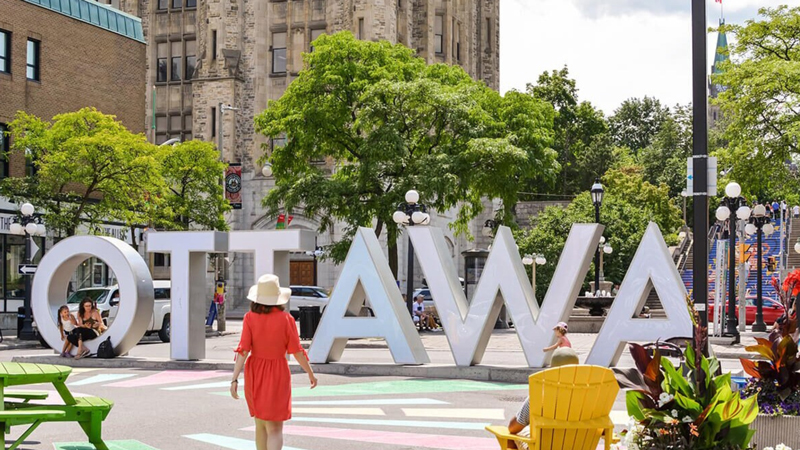
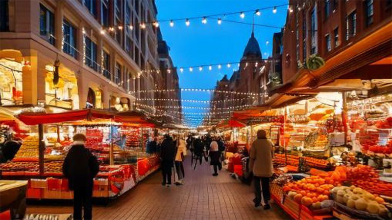
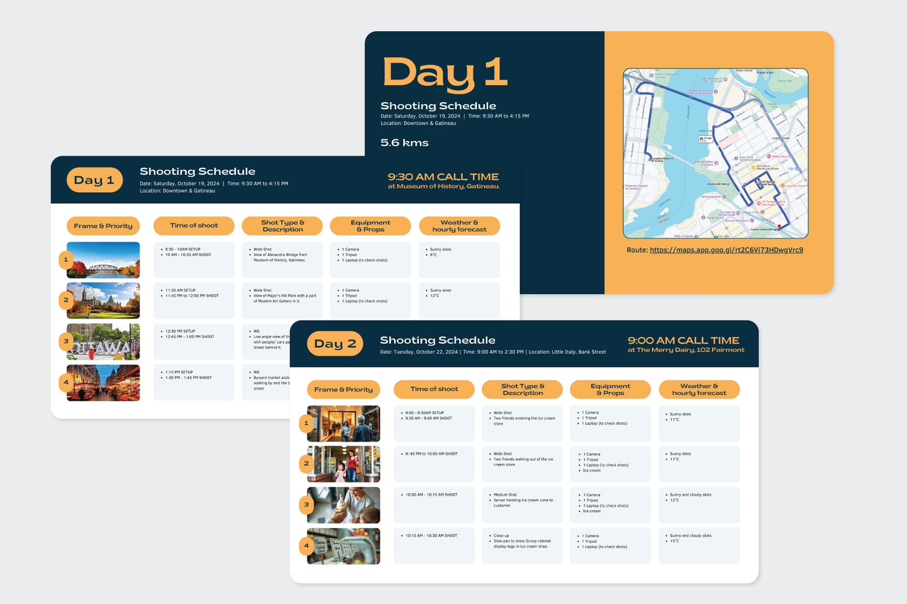
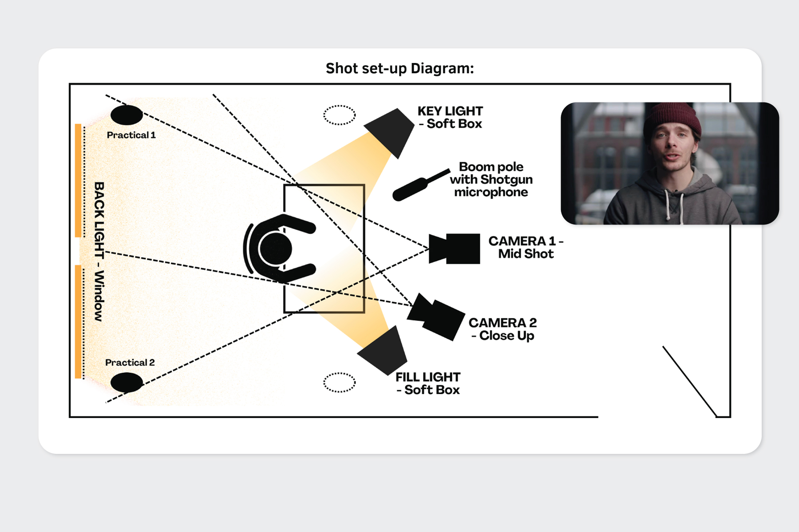

Now featured on the Open Ottawa website!
Open Ottawa: Data for a Smarter City
For our Applied Projects class at Algonquin College, I led my team to create an informational video to promote the City of Ottawa's Open Data portal.
Problem:
Open Ottawa provides access to 500+ datasets about the city, yet many local residents & businesses are not fully aware of the platform or how it can benefit them.
Solution:
A short 2 min. informational video that raises awareness of Open Ottawa with examples of how the portal's datasets can be used by individuals & businesses.
Tools:
- Adobe Creative Suite
- Video & Audio Equipment
- Audio Recording Studio
My Role:
- Team Lead & Project Management
- Motion Graphics
- Client Communication
Timeline:
- Planning & Pre Production: 5 weeks
- Production & Shoot: 3 weeks
- Recording & Post: 4 weeks
Process:
Pre Production:
We began by researching the platform, its benefits, and the client’s target audience. From this, we developed personas to better understand their needs and tailor our message:
We then developed a script that would resonate with our personas & solve for the client's problem by:
- Raising awareness by showcasing the platform's features.
- Showcasing examples of a parent and a business owner.
- Encouraging use of the portal with a call to action.
We'd also created a moodboard, shot-list & storyboard to visualize the video's flow and to ensure that the message was clear and engaging:


Production:

Based on the storyboard, we first conducted location scouting using Google's Street View before visiting in person. This allowed us to be efficient with time & resources.
This allowed us to create the Shoot Schedule where we grouped nearby shots and split the video into 5 days of shoot. The schedule had to be time-sensitive to prioritise outdoor shots during a heatwave before stormy weather arrived.

We also planned a Shot Set-up Diagram for shoot day 4 to achieve a well-lit subject in a small meeting room, for the interview scene with our client. This allowed us to be well prepared and efficient, allowing us to get multiple takes.
Post Production:
Once we had recorded the Voice Over, we used it to structure the film, putting our rough cut together & animating motion graphics to form an offline cut. A couple rounds later, with colour correction, grading, audio mixing with music, sound design, and some fine tuning, we had our final product.
Final Video:
This project would not have been possible without the valuable contributions of my team members: Fallon Pulido, Esmeralda Paredes, Tina Le, Reda El Maddahi, and the support of our professor, Sean Sytsma.
Thank you for scrolling till the end.